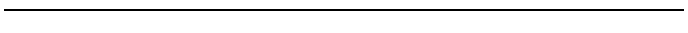
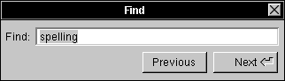

Release 3.3 Copyright ©1995 by NeXT Computer, Inc. All Rights Reserved.
| 5 |
Panels
| Panels support the work done in the principal windows of an application. Like menus, most panels are vehicles through which the user can give instructions to the application. But unlike menus, they aren't restricted to a single column of commands: A panel can provide the user with a variety of different control objects--buttons, sliders, text fields, and more--arranged as best suits its purpose. The Font, Find, Page Layout, and Open panels are all examples. Such panels can be viewed as generalized and more versatile menus.
Some panels play a different role, however. Instead of letting the user give instructions to the application, they give information to the user. Help panels, the Info panel, and attention panels that display warnings are examples. What unites all panels--whether they convey instructions from the user to the application or information from the application to the user--is that they play conventional, supporting roles. Unlike windows, none of them is a site for the user's main work in the application. In a panel, the dialog between the application and the user is highly structured in both form and content. This chapter first describes the basic attributes of ordinary panels, and then describes how attention panels are different. The last section gives guidelines on creating your own panels and using the ones supplied by the Application Kit. |
| How Panels Work |
| Because panels are a type of window, many of their characteristics are discussed in Chapter 4, "The Window Interface to Applications." Only the unique characteristics of panels are discussed in this section.
Ordinary Panels Ordinary panels--those that aren't attention panels--look and act very much like standard windows. They're typically in the same tier as standard windows, so they compete with them for screen space. They have title bars just like standard windows, although panels don't usually have miniaturize buttons. However, ordinary panels differ from windows in a number of ways: |
| They can never be the main window. | ||
| They shouldn't become the key window unless they accept characters from the keyboard. | ||
| They generally aren't visible unless they belong to the active application--they rarely persist on-screen once the application has been deactivated. |
| In addition, some ordinary panels are in a tier above standard windows, as discussed later in "Floating Panels." |
|  |
| Programming Note: Creating Panels
The Application Kit contains several ready-made ordinary and attention panels that you can use, as well as functions that let you easily create basic attention panels. You can also create custom panels--either ordinary panels or more complex attention panels. If you create a custom attention panel, you are responsible for making sure that the panel looks like an attention panel. (Similarly, custom ordinary panels should look like ordinary panels, and not like attention panels.) |
| Attention Panels
An attention panel demands attention from users by denying them the ability to work in any other window of the active application. Until it's explicitly dismissed, the panel limits what the user can do within the application to just rearranging windows. Nothing else--title bar buttons, text entry, miniwindows, or controls in other panels--will work. The only menu commands that work are those that can affect the panel itself--for example, Cut, Copy, and Paste, if the panel includes a text field. It's possible to activate another application while an attention panel is on-screen, but when the user returns to the previous application, the mode created by the attention panel is still in effect. An attention panel differs from ordinary panels in the following ways: |
| It has an empty title bar. | ||
| It's closed by one or more buttons in its content area, not by a button in the title bar. | ||
| It stays on-screen--even when the application isn't active--until dismissed by the user. | ||
| It's the key window whenever the application is active. | ||
| It's isolated in a tier above everything on the screen except spring-loaded windows such as pop-up lists. |
| Attention panels come up centered in the upper part of the screen, so the user can't overlook them. (The user can move them out of the way, though.)
Because an attention panel sets an exclusive mode for itself, in effect disabling the rest of the application, it must be unmistakable and immediately apparent to the user. Some of the features that distinguish attention panels from other windows are illustrated below. |
| Attention panels are dismissed from the screen as soon as the user takes the required action, which can be as simple as typing Return. When dismissed, the panel's mode ends. |
| Implementing Ordinary Panels |
| Ordinary panels can be used in many ways, so you have many choices when implementing them. This chapter discusses the conventions for ordinary panels that are different from those for standard windows.
Window Considerations Although ordinary panels are similar to standard windows, conventions for title bar buttons and key-window status differ slightly from those for standard windows. For more detailed information on the title bar buttons and on key windows, see "Implementing Windows" in Chapter 4.
Using the Resize Bar If resizing the panel might be useful, then it should have a resize bar. Like a standard window, a panel should constrain its shape if necessary to prevent the panel from becoming a size that's too large or too small.
Using the Miniaturize Button A panel can have a miniaturize button, but it's rare that one would be needed. Like menus, panels can be closed and returned to the screen through a menu command. A miniaturize button is redundant unless a miniwindow would, for some reason, be more convenient for the user than the command, or unless the panel persists on-screen when the application isn't active (see "Persisting Panels," later in this chapter).
Using the Close Button Every ordinary panel should have a close button so the user can dismiss the panel when it's not needed. The close button is never broken, since panels don't contain the main work of the application.
Becoming the Key Window An ordinary panel should become the key window only if it accepts keystrokes (typing) or if it's used independently of any other windows. For example, the Find panel becomes the key window so that the user can type in the word to be found. But the tools palette in a graphics application should never become the key window because it's operated only by the mouse and it's always used in conjunction with a document window. On the other hand, the standard Info panel should become the key window because it contains information that's independent of the application's other windows. In other words, it's the center of the user's attention and thus should be the key window. A panel that accepts keystrokes can delay becoming the key window until the user indicates a readiness to begin typing (such as by clicking in a text field), provided that both of the following are true: |
| Text entry is not essential to using the panel. | ||
| Users typically don't enter text when using it. |
| This is likely to be the case if most of the control devices in the panel are not text fields (they are buttons, selection lists, and so on) and if the choices that can be made by entering text can also be made in an alternative way (for example, by selecting items from a list). The Font panel is an example. This kind of panel should not show any selection until the user indicates a readiness to begin typing. |
| Programming Note: Avoiding Key-Window Status
Panels that need to avoid becoming the key window until the user indicates a readiness to begin typing can use the setBecomeKeyOnlyIfNeeded: method of the Panel class to do so. However, panels that should never become key--a tools palette, for example--must use a different way to avoid becoming the key window. Each panel must remove key-down and key-up events from its event mask. |
| Relinquishing Key-Window Status
A panel should remain the key window only as long as necessary. If user actions within the panel affect the main window, key-window status should be returned to the main window as soon as those actions are completed. For example, when the user clicks the Set button (or types Return) in a Font panel to change the font of the current selection in the main window, the panel gives up key-window status (if it had it). In all likelihood, the user is finished with the Font panel (at least until the selection has changed) and is ready to resume working in the main window. Under these circumstances, the user should be free to begin working in the main window immediately, without being forced to click in it just to make it the key window.
Exceptions to Ordinary Panel Behavior In general, ordinary panels are unobtrusive. They're in the lowest tier on-screen, and they disappear when their application is deactivated. Sometimes, though, an ordinary panel needs to be more prominent, as described in the following sections.
Persisting Panels By default, an ordinary panel is removed from the screen when its application is deactivated. The user sees only panels related to the active application. This prevents confusion--such as might arise when similar Find panels for two different applications are on-screen at once. An application can override this default behavior and allow a panel to remain on-screen after the application has been deactivated, but only if the panel contains information that would be pertinent to the user's activities in another application. This should be a rare occurrence. An example is the Workspace Manager Info panel, which contains system-level information such as the amount of memory in the computer. Because the user might want to copy this information down--for example, into a mail message--this panel persists even when the Workspace Manager is deactivated.
Floating Panels Ordinary panels are normally in the same tier as standard windows. Sometimes, though, it's useful to have a panel float above all other standard windows and ordinary panels. For example, a small panel containing a palette of drawing tools is most useful if it floats above the application's other windows. An example of a palette is below. |
| A panel should be allowed to float above standard windows only if it passes all four of the following tests: |
| It's oriented to the mouse rather than the keyboard. Thus a panel that can become the key window should not be made a floating panel, unless it becomes the key window only when the user is ready to type (see "Becoming the Key Window" earlier in this chapter). | ||
| It's important that the panel remain visible while the user works in the application's standard windows. This test is passed if the user must frequently move the cursor from a standard window to the panel and back again (as for a tool palette) or the panel gives information relevant to the user's actions in the standard window (as in some inspector panels). | ||
| It's small enough not to obscure much of what's behind it. | ||
| It doesn't persist (remain on-screen) when the application is deactivated. |
| Thus, panels float for some of the same reasons that menus do.
Panels with Variable Contents Two types of ordinary panels--multiform panels and inspector panels--are used in many applications to show specialized information in a limited amount of space. Both multiform and inspector panels can be used for many different purposes, even within the same application.
Multiform Panels A multiform panel is a panel that has a pop-up list or set of graphical radio buttons at the top that lets the user choose which form the panel takes. For example, the following panel lets the user choose any one of seven different forms. |
| Multiform panels conserve screen space by combining many related panels into a single panel. Since all their contents aren't visible all the time, multiform panels shouldn't be used for an application's most basic functionality.
Inspector Panels An inspector panel is any panel that displays information about the object that's currently selected. Inspectors usually let the user set properties of the object, as well. The Font panel (described in "Standard Panels" later in this chapter) is an inspector panel. It displays information about the font of the current selection. The Workspace Manager Inspector panel (shown below) lets the user see and set information about the currently selected file or folder. Inspectors are often multiform panels, with each form displaying a different kind of information about an object. |
| Implementing Attention Panels |
| Attention panels are appropriate in only a limited number of situations. Because they create a mode that severely limits the user's freedom of action, their use should be restricted as much as possible. A panel can be made an attention panel when: |
| It gives the user information about the current context. Such panels usually warn of an error, of a potentially dangerous or unexpected result of the user's current course of action, or of a condition that makes it impossible to carry out a requested action. But they may also simply supply information the user will need to proceed intelligently with the application. | ||
| It interrupts an action to give the user an opportunity to take corrective steps--as, for example, the panel that interrupts the Quit command to let users save altered files before the application terminates. | ||
| It clarifies or completes a user action--as, for example, the panel that completes the Save As and Save To menu commands. (In this case, the menu command must have three dots after its name--for example, "Save As...". This is discussed under "Commands that Bring Up Panels," in Chapter 6, "Menus.") |
| Attention panels that interrupt or complete an action must have a Cancel button. The Cancel button gives the user the option of canceling the action, in which case it should be as if the user had never initiated the action in the first place. Panels that inform or warn should, if possible, let the user choose what to do in response to the information they convey.
Naming an Attention Panel Attention panels that come up as the result of a command or a commandlike user action should be named after the action that brings them to the screen. For example, the panel that appears as the result of choosing a Save, Save As, Save To, or Save All command should be named Save. The panel that comes up when the user wants to close an edited but unsaved document should be named Close, whether it's invoked from the close button or through the Close or Close Window commands. The panel's name appears just to the right of the application icon, as shown in the following figure. |
| The Default Option in an Attention Panel
When a user action brings up an attention panel with a variety of choices, the default button, the one in the lower right corner of the panel, should allow the user to easily carry through with the action. It should not contradict what the user set out to do. Specifically, it should not be the Cancel button. The default button should not perform any additional action not implied by the user request that brought up the panel. In general, it should be the safest of the alternatives (for example, Open Copy rather than Open Anyway when the user tries to open a document that someone's already opened). The default button in an attention panel should normally be operable by pressing the Return key on the keyboard (when the panel is the key window). If so, it should be marked by the Return symbol . However, if the button has dangerous side effects, it's acceptable to require that the user press the button.
Dismissing an Attention Panel Each action that can dismiss an attention panel is represented by a separate button inside its content area. In contrast, an ordinary panel is closed only by its close button (or the Close Window command), never by a button in the content area. The buttons that dismiss an attention panel should be located along the right and lower edges of the panel, with the default button in the lower right corner. No button except for the default button should be operable by the Return key.
Naming Buttons in an Attention Panel When naming buttons in an attention panel, you should label each one clearly with a verb or verb phrase describing the action it performs. The user shouldn't have to read the text of the attention panel to be able to choose the right button. Thus, generic labels (like Yes and No) aren't appropriate, as they tend to cause user errors. Avoid using OK unless it's the only button in the attention panel. Good names for attention panel buttons include: |
| Cancel Close Anyway Don't Close Don't Save Explain Open Open Copy Open Anyway Quit Anyway Replace Revert Review Unsaved Save Save All Set |
| Optional Explanations in an Attention Panel
An Explain button can offer users a way of getting more information before dismissing the panel. A typical example is shown below. |
| Standard Panels |
| Some panels show up in many different applications. For example, every application must have an Info panel, which gives certain kinds of general information about the application. Text processing applications also have a Font panel, which lets the user set the font of the text selection.
This section describes all the standard panels. Some of them you have to create from scratch, using the guidelines in this section. Others are provided by the Application Kit. If a standard panel exists for functionality in your application, you should use it rather than designing your own. You can customize Application Kit panels, if necessary, by adding controls and information to what the Application Kit provides. For example, the Open panel on the left, below, has a check box added to it. Compare it to the normal Open panel on the right. |
|
|
| Programming Note: Customizing Application Kit Panels
To customize panels that are implemented by the Application Kit, you should first construct a View containing the information and controls you want to add. You can then add the View by sending it to the panel in a setAccessoryView: message. |
| The following table lists and describes the standard panels. After the table are sections describing how to implement each panel that isn't completely implemented by the Application Kit. |
| Panel | Description | |
| Close | An attention panel that should come up when the user tries to close a document that has unsaved changes. See "Implementing the Close Panel," later in this chapter, for more information. | |
| Colors | An ordinary panel that's provided by the Application Kit. It lets the user preview and specify colors in any of the following modes: color wheel, grayscale, red-green-blue (RGB), cyan-magenta-yellow-black (CMYK), hue-saturation-brightness (HSB), custom palette (which loads an image from which the user can choose colors), and custom color lists. | |
| A Colors panel sometimes works with color wells. See "Color Wells" in Chapter 7, "Controls," for information on color wells. See "The Font Menu" in Chapter 6 for information on the command that brings up the Colors panel. | ||
| Find | An ordinary panel that lets the user enter a string for an application to search for. See "Implementing the Find Panel," later in this chapter, for more information on this panel. | |
| Font | An ordinary panel that's provided by the Application Kit. It lets the user preview fonts and change the font of the currently selected text. See "The Font Menu" in Chapter 6 for more information on the interface to fonts. | |
| Help | An ordinary panel that's provided by the Application Kit. You should use this panel to display any on-line help provided by your application. This panel displays information that can contain text, graphics, and link buttons (which lead to other information). See "Using the Help Panel," later in this chapter, for information on creating help. | |
| Info | An ordinary panel that displays information about the application. See "Implementing the Info Panel," later in this chapter, for more information on this panel. |
(continued)
| Panel | Description | |
| Link Inspector | An ordinary panel that's provided by the Application Kit. It lets the user get and set attributes of the selected linked information. If your application's documents can receive linked information, then it should have this panel. See "Using the Link Inspector Panel," later in this chapter, for more information. "The Link Menu" in Chapter 6 has more information about links. | |
| Open | An attention panel provided by the Application Kit. It lets the user specify the name of a file to open. See "Using the Open Panel," later in this chapter, for more information. The Document menu's Open command brings up this panel, as described in Chapter 6. | |
| Page Layout | An Application Kit panel that queries the user for information that's needed for displaying the document on-screen, as well as for printing. It's brought up by a command in the Format menu, as described in "The Format Menu" in Chapter 6. This panel can be replaced by one more appropriate to your application, especially if your application has extensive page layout capabilities. | |
| Preferences | An ordinary panel that allows the user to determine details of how the application looks and works. See the section, "Implementing the Preferences Panel," later in this chapter, for more information. | |
| An attention panel that's provided by the Application Kit. This panel comes up every time the user prints a document or other data. After specifying the information needed for printing, the user can do any of the following: send the output to a printer; save the output to a PostScript file, instead of printing it; send the output to a fax modem, instead of a printer; preview on-screen what will be printed; cancel any of the above actions, even after they've started. The main menu's Print command brings up this panel, as described under "The Main Menu" in Chapter 6. | ||
| Quit | An attention panel that should come up when the user tries to quit an application that has unsaved or uncompleted work. See "Implementing the Quit Panel," later in this chapter, for more information. |
(continued)
| Panel | Description | |
| Save | An attention panel that's provided by the Application Kit. It queries the user for the name of a file to save to. See "Using the Save Panel," later in this chapter, for more information. See "The Document Menu" in Chapter 6 for information on when the Save panel is used. | |
| Spelling | An ordinary panel provided by the Application Kit to help the user check the spelling of text. See "Checking Spelling" in Chapter 6 for more information. |
| Implementing the Close Panel
When the user closes a document that has been edited but not saved, the application must bring up a Close panel giving the user an opportunity to cancel the operation, save the document before closing, or confirm that it should be closed without saving. This attention panel should have at least these three buttons: |
| Cancel | Don't Save | Save |
| Save is the default option because many users don't think of closing a document and saving the most recent changes to it as separate operations--for many, closing implies saving.
If closing a document or window has consequences other than that unsaved changes would be lost, the application must still bring up a Close panel informing the user. For example, when the user closes a terminal emulation window, the application should notify the user that closing the window will cause the running command to be terminated. If the panel can't offer the user any way of avoiding the side effects, it should have these buttons: |
| Cancel | Close Anyway |
| Note: Do not bring up a Close panel unless work is about to be lost.
Implementing the Find Panel |
|  |
| This ordinary panel should have at least a text field to enter the search string and a button to find the next instance of the string. It's also good to have a button for finding the previous instance of the string.
Note: Although we recommend that buttons have verbs as titles, it isn't appropriate in the panel above, for two reasons. First, changing the titles to Find Previous and Find Next hides the real difference between the buttons; it's easy to miss the second word in a button. Second, since Find is already mentioned in the panel twice (and no other verb is), it's redundant to put Find in the button titles. See "Choosing the Button's Image or Label" in Chapter 7 for more information on naming buttons. Many Find panels have more controls than the one shown above, such as the following: |
| A check box that lets the user choose whether capitalization matters (by default, it shouldn't) | ||
| A check box to choose whether partial words should be considered matches (by default, they should) | ||
| A Replace With text field (and related buttons--see Edit for an example) so that the user can replace the selected string | ||
| Radio buttons that determine the scope of global searches or replacements (by default, the scope should be global rather than just the selected region) | ||
| Options for finding objects other than strings (such as paragraph characteristics) |
| Although the Find panel usually stays up until the user explicitly closes it, it's common to dismiss the panel early in one case. This case is described in "Determining the Action that Is Performed" in Chapter 3, "User Actions: The Keyboard and Mouse."
The Find Panel menu command brings up this panel. The Find Next and Find Previous commands correspond to its two buttons. (See "The Find Menu" in Chapter 6.)
Using the Help Panel The Application Kit Help panel is part of the NEXTSTEP help system. Some of the information displayed by this panel is already provided by the help system. For example, every application has available to it ready-made help on using the NEXTSTEP user interface. Besides help on basic tasks, such as using menus and scrollers, the help system has skeletal help that's automatically displayed when the user Help-clicks in menus and panels that are implemented by the Application Kit. For example, when the user Help-clicks in the Print panel, some basic information on using the panel appears in the Help panel. To use the Help panel, you need to add information about the objects in your application and the tasks associated with them. You should also override the standard help for Application Kit panels and commands with new files containing links to more task-oriented help. Once you've added the information, you should modify the provided index and table of contents so that they refer to the information. |
| Programming Note: Implementing On-Line Help
The Help panel is one part of NEXTSTEP support for on-line help. Other support includes: |
| A question mark cursor that appears when the user presses the Help key (or on keyboards without a Help key, when both the Alternate and Control keys are pressed) | ||
| An easy way to connect interface objects with help text, so that when the user Help-clicks an object, information about the object automatically appears in the Help panel | ||
| Built-in help for basic tasks (such as using menus and operating scrollers) |
| To add help to an application, you first add a help folder using Project Builder. This help folder includes template files for the Help panel's index and table of contents. You can create and modify these and other help files, along with the help links in them, with developer-mode Edit. Both Interface Builder and the Application Kit have support for associating help with the user interface objects in your application.
For more information on implementing on-line help, see the NXHelpPanel discussion in the NEXTSTEP General Reference. |
| If your application uses the Help panel, it should also support Help-clicking of its objects. (Otherwise, when the user Help-clicks an object, the Help panel will come up but will likely show inappropriate help.) Help-clicking an object results in the panel automatically displaying the most specific help available. For example, when the user Help-clicks a button, the help system first looks to see whether the button has help associated with it; if so, the Help panel displays it. If not, the help system looks for more general help, such as that associated with the window or even the application that the button is in. |
| Writing Note: Creating On-Line Help
You're encouraged to reuse the contents of the help in NeXT applications such as Edit, Mail, and Workspace Manager. After copying the contents from one of these applications' Help panels, you can paste the contents into a file in your application's help folder. You should then modify the help text and update the help links it contains so that the help suits your application. For example, Edit has help on working with documents, text, graphics, and color, as well as on printing and faxing. With a few changes, much of this help is appropriate for other document-based applications. You're also encouraged to use the design of NeXT's help. Help in NeXT applications is task-oriented, with Help-clicking serving as a way of discovering the tasks an object is used for. At the end of every help file is a list of related tasks, with links to the help for each task. The objects that have associated help are generally menu commands, standard windows, panels, and a few important buttons such as those in Mail's Compose window. If supplying this level of help isn't practical, then you should at least ensure that Help-clicking any object results in help on a relevant subject, even if the help is very general. |
| Implementing the Info Panel |
| Each application must have an Info panel. This ordinary panel should display a small amount of basic information about the application: |
| The name of the application | ||
| The application icon | ||
| Copyright information | ||
| The current version of the application | ||
| The names of the authors (optional) |
| The Info panel should not offer help for using the application or give an extensive amount of other information about it (such as its history or purpose).
Interface Builder provides a sample Info panel that you can use in your application. See "The Info Menu" in Chapter 6 for information on the command that brings up the Info panel.
Using the Link Inspector Panel When using this Application Kit panel, you should provide an accelerator for the panel's Open Source button: Double-clicking an item of linked information while pressing the Control key should have the same result as selecting the item and choosing the Open Source button.
Using the Open Panel If your application can open only certain types of files, then it should show only those files in this Application Kit panel. The Open panel should come up showing the folder of the most recent main window (since the application started up). If the application has had no main window since it started up, then the Open panel should show the user's home folder.
Implementing the Preferences Panel |
 |
| Most applications have a Preferences panel, an ordinary panel that allows the user to determine details of how the application looks and works. A user typically uses this panel only a few times. It should not be necessary to bring up the Preferences panel during normal use of the application.
Preferences typically include such things as: |
| The default font size | ||
| The format for displaying data | ||
| Whether to make backup files | ||
| The default size of windows | ||
| Options that increase the power of the application | ||
| The application's keyboard alternatives |
| Do not use the Preferences panel for anything the user might want to set from time to time during a session. Also, the contents of the Preferences panel should be valid applicationwide: They shouldn't change depending on which window or data is selected.
All preferences should carry over from session to session; most will also affect the way the application works during the current session. All of an application's options must be settable in some way from within the application. For example, it isn't acceptable to have options that are settable only by using the dwrite command. Preferences panels are often implemented as multiform panels to reduce their size and to organize their options. The Preferences panel is brought up by the Preferences command in the Info menu. See Chapter 6 for information on the Info menu.
Implementing the Quit Panel When the user tries to quit an application that has unsaved or uncompleted work, the application should bring up a Quit panel. For example, if the user has edited a document and not saved the changes, or if the application is still computing (for example, a command is executing in a UNIX shell), a Quit panel should appear. In both cases, one or more of the application's windows should have a broken close button, as described in "Using the Close Button" in Chapter 4. The Quit panel should be an attention panel that has the following buttons: |
| A Cancel button (only when the panel is brought up as the result of choosing the application's Quit command) | ||
| A Quit Anyway button | ||
| A Review Unsaved button (only for document-oriented applications) that cycles through unsaved documents, letting users decide which ones to save before quitting. |
| The buttons are arranged as follows: |
| Cancel | Quit Anyway | Review Unsaved |
| An application could also add a Save All button that saves every unsaved document, exactly as the Save All command does.
Important: Because applications can't cancel logouts and poweroffs, the Quit panel shouldn't have a Cancel button when it's brought up as the result of a logout or poweroff: |
| Quit Anyway | Review Unsaved |
| Review Unsaved is the default button. It brings up a Review Unsaved panel for each unsaved document. This panel is essentially the same as the Close panel described above, though with a different name to reflect the different manner in which it's invoked.
The Cancel button in the Review Unsaved panel cancels the review process and returns the user to the Quit panel. Once the user has finished cycling through all the documents (without clicking Cancel), the application should quit. Note: Do not bring up a Quit panel unless work is about to be lost.
Using the Save Panel This Application Kit panel should come up showing the folder of the document being saved (the document in the main window). A document's folder is reflected in its window's title bar. For example, if the title bar shows |
| UNTITLED-1 -- /Net/machine/home |
| then the Save panel should come up showing /Net/machine/home. |